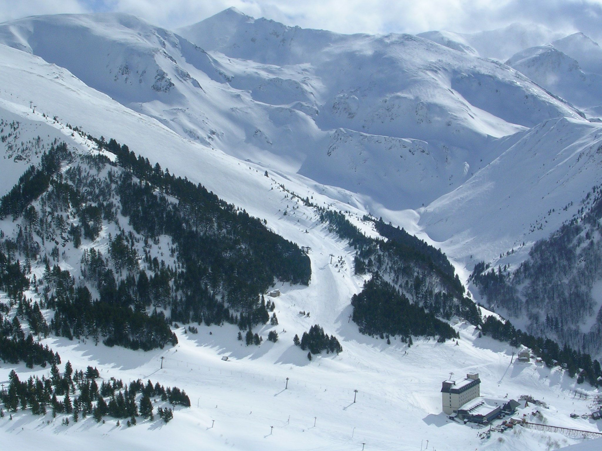

1 / 3

Rugova Mountains
Rugovais a mountain region located to the north-west of the city of Peja, in Kosovo region. According to notes of Rugova it has been inhabited since before the 12th century. In 2013, it was designated a national park by the Parliament of Kosovo.Rugova is an ethnographically diverse region, with great importance for the literary branches of lexicology, etymology and onomastics.[1] Rugova is a suitable region for hiking, skiing, mountaineering, paragliding, and picnics.
2 / 3

Brezovica
It is the most visited winter tourist destinations in Kosovo. The ski resort area is ideally situated on the north and northwest-facing slopes of the Shar National Park. The ridge line spans 39,000 hectares of high alpine mountain terrain and forests, with a highly diverse and abundant flora and fauna. Located within 90 minutes of two international airports, the Brezovica resort area represents one of the last remaining under-developed ski resort areas in Southeast Europe.
3 / 3

Mirusha Waterfall
Mirusha waterfalls have, over time, created canyons and caves, which are famous throughout the country. The river has carved a 10 kilometres (6 mi) canyon and created 13 lakes with waterfalls between them. The waterfalls are one of the most visited attractions of the area and people often swim there. The walls around the waterfalls are white in colour, whereas the water from the Mirusha river is a dirty brown. The waterfall's caves are also popular with visitors. The highest waterfall, between the sixth and seventh lake, is 22 metres (72 ft) high.